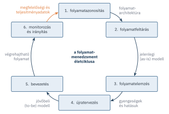
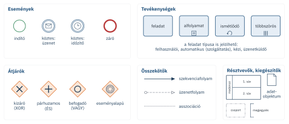
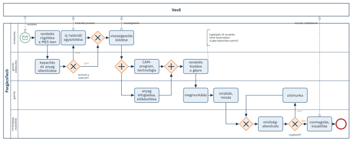

A fejezet feldolgozása után képes leszel:
- elhelyezni a folyamatmodellezést a folyamatmenedzsment életciklusában;
- kiválasztani a folyamatfeltárás megfelelő módszereit, és összevetni erősségeiket és gyengeségeiket;
- BPMN 2.0 jelöléssel modellezni egy több résztvevős folyamatot eseményekkel, tevékenységekkel, átjárókkal, sávokkal és üzenetfolyamokkal;
- alkalmazni a modellezési irányelveket, hogy a modell érthető és hibamentes legyen;
- a modellből a folyamat átfutási idejét kiszámítani, és eldönteni, mikor van szükség szimulációra;
- megkülönböztetni a folyamatbányászat három feladatát, és a modellt eseménynaplóval összevetni;
- nagy nyelvi modellt felelősen használni a modell előállításában és ellenőrzésében.
Az előző fejezet a folyamatot számokkal írta le: árammal, kapacitással, hatékonysággal. Ehhez azonban tudni kell, milyen lépésekből áll a folyamat, ki végzi őket, hol ágazik el, és milyen információ áramlik a résztvevők között. Ezt a folyamatmodell rögzíti. A rendszermérnökségben a folyamatmodellnek kettős szerepe van: a fejlesztés tárgyát (egy gyártó- vagy szolgáltatófolyamatot) írja le, és egyben a fejlesztendő informatikai rendszer követelményeinek forrása, mert megmutatja, mely lépéseket kell a rendszernek támogatnia vagy automatizálnia. A fejezet a folyamatmenedzsment tankönyvi összefoglalására (Dumas és mtsai. 2018), a BPMN 2.0 szabványra (Object Management Group 2011) és a folyamatbányászat alapművére (Aalst 2016) épül.
20.1. A folyamatmenedzsment életciklusa
Dumas és szerzőtársai a folyamatmenedzsmentet hat szakaszból álló, ismétlődő ciklusként írják le (20.1. ábra) (Dumas és mtsai. 2018, 1. fejezet). A folyamatazonosítás a szervezet folyamatait és kapcsolataikat (a folyamatarchitektúrát) tárja fel, és kiválasztja a fejlesztendő folyamatot. A folyamatfeltárás a jelenlegi (as-is) modellt készíti el. A folyamatelemzés a gyengeségeket és azok hatását tárja fel, minőségi és mennyiségi módszerekkel. Az újratervezés a jövőbeli (to-be) modellt állítja elő. A bevezetés a szervezeti változtatásokat és a folyamat informatikai támogatását valósítja meg. A monitorozás és irányítás a végrehajtás adataiból méri a folyamatot, és visszacsatol a következő ciklusba.

A ciklus a V-modellel jól összeilleszthető: a feltárás és az elemzés a probléma meghatározásához és a működési koncepcióhoz (4. fejezet), az újratervezés az architektúrához és a koncepcióválasztáshoz, a bevezetés a megvalósításhoz és az integrációhoz, a monitorozás az üzemeltetéshez tartozik. A ForgácsTech MES-projektje (10. fejezet) például a rendelésteljesítési folyamat feltárásával kezdődött, és a bevezetett rendszer adataiból a folyamat újabb ciklusban fejleszthető tovább.
A folyamatok három csoportját érdemes megkülönböztetni: az üzleti (alap)folyamatok értéket teremtenek a vevő számára (például a rendelésteljesítés), a fejlesztési folyamatok új termékeket és képességeket hoznak létre, az üzemeltetési (támogató) folyamatok a működés feltételeit biztosítják (karbantartás, beszerzés, informatika).
20.2. Folyamatfeltárás
A folyamatfeltárás nehézsége, hogy a folyamatot ismerő szakemberek általában nem modelleznek, a modellező pedig nem ismeri a folyamatot. A tudás szétszórt: mindenki a saját lépéseit ismeri, és ritkán látja a teljes folyamatot (Dumas és mtsai. 2018, 5. fejezet). A feltárás módszereit a 20.1. táblázat foglalja össze.
| Módszer | Erősség | Gyengeség |
|---|---|---|
| dokumentumelemzés | strukturált információ, nem igényli az érintettek idejét | elavult anyag, nem megfelelő részletezettség |
| megfigyelés | gazdag, a valóságot mutató kép a folyamatról | zavaró lehet, a megfigyeltek másképp viselkedhetnek, kevés esetet lát |
| automatikus feltárás (folyamatbányászat) | sok eset, objektív adat | az adatok minősége gyenge lehet |
| interjú | részletes, mélyre hatoló kérdezés | sok időt kér az érintettektől, több körös egyeztetés kell |
| workshop | az eltérő nézetek közvetlenül tisztázhatók | egyszerre több érintett jelenlétét igényli |
A módszereket a gyakorlatban kombináljuk: a dokumentumokból és az informatikai rendszerek naplóiból vázlatot készítünk, interjúkkal és megfigyeléssel pontosítjuk, és workshopon hagyjuk jóvá. Az interjúk technikáját a 5. fejezet, a megfigyelés és a feladatelemzés módszereit a 11. fejezet tárgyalja.
20.3. A BPMN 2.0 jelölés
A BPMN (Business Process Model and Notation) az Object Management Group (OMG) szabványa, amelynek 2.0 változata 2011-ben jelent meg (Object Management Group 2011), és ISO/IEC szabványként is elfogadták (ISO/IEC 2013). Célja, hogy az üzleti és a műszaki szakemberek egyaránt megértsék, és hogy a modell végrehajtható folyamatleírássá is alakítható legyen. A szabvány az elemeket öt alapcsoportba sorolja: folyamatobjektumok (események, tevékenységek, átjárók), adatok, összekötők, résztvevők (medencék és sávok) és kiegészítők (Object Management Group 2011, 7.2. szakasz). A leggyakrabban használt elemeket a 20.2. ábra mutatja.

- Események: valami, ami megtörténik. Az indító esemény elindítja, a záró esemény befejezi a folyamatot, a köztes esemény a folyamat közben következik be (például egy üzenet megérkezése vagy egy határidő lejárta). Az esemény típusát belső jel mutatja: üzenet, időzítő, hiba, jelzés.
- Tevékenységek: a munka egységei. A feladat tovább nem bontott tevékenység; az alfolyamat önálló modellben részletezett tevékenységcsoport. A jelölők ismétlődést, többszörös végrehajtást vagy kompenzációt jeleznek; a feladat típusa is jelölhető (felhasználói, automatikus, kézi, üzenetküldő).
- Átjárók: a folyamat elágazása és összefutása. A kizáró (XOR) átjáró a feltételek alapján pontosan egy ágat választ; a párhuzamos (ÉS) átjáró minden ágat elindít, illetve mindegyik befejeződését megvárja; a befogadó (VAGY) átjáró egy vagy több ágat indít; az eseményalapú átjáró annak alapján választ, melyik esemény következik be előbb.
- Összekötők: a szekvenciafolyam a végrehajtás sorrendjét mutatja egy résztvevőn belül, az üzenetfolyam két résztvevő közötti üzenetváltást, az asszociáció a kiegészítőket köti az elemekhez.
- Résztvevők: a medence egy önálló résztvevőt (szervezetet, vevőt, informatikai rendszert) jelöl, a sáv a medencén belüli szerepet vagy szervezeti egységet. Két medence között csak üzenetfolyam lehet.
- Kiegészítők: az adatobjektum a folyamatban keletkező vagy felhasznált dokumentumot, adatot jelöl; a csoport és a szöveges megjegyzés a modell olvasását segíti.
A ForgácsTech csapata a MES első ütemének bevezetésekor a rendelésteljesítés jövőbeli folyamatát BPMN-nel modellezte (20.3. ábra). A vevő külön medence: belső működése nem érdekes, csak az üzenetváltás vele. A ForgácsTech medencéje négy sávra oszlik. A rendelés beérkezésekor az értékesítés rögzíti a rendelést a MES-ben, a gyártáselőkészítés a MES ütemezőjével ellenőrzi a kapacitást és az anyagot. Ha a kért határidő nem tartható, az értékesítés új határidőt egyeztet a vevővel; ezután küldi el a visszaigazolást. A CAM-program elkészítése és az anyag lefoglalása párhuzamosan fut. A rendelést csak akkor adják ki a gépre, ha a folyamatban lévő rendelések száma a korlát alatt van (19. fejezet). A minőségellenőrzés után a nem megfelelő darab utómunkára kerül, majd újra ellenőrzik.

A jelenlegi folyamat modellje két fontos különbséget mutatott. A kapacitást a termelésvezető becsülte heti egyszer, papíron, ezért a visszaigazolás átlagosan több mint egy napig tartott. A sürgős rendeléseket pedig szóban sorolták előre, ami a modellben sehol sem jelent meg, a valóságban viszont gyakori volt (20.6. szakasz).
20.4. Modellezési irányelvek
Ugyanaz a folyamat sokféleképpen modellezhető, és a modellek érthetősége, hibákra való hajlama nagyon különböző. Mendling, Reijers és van der Aalst empirikus vizsgálatok alapján hét irányelvet fogalmazott meg (7PMG) (Mendling, Reijers, és Aalst 2010):
- a modell a lehető legkevesebb elemből álljon;
- egy elembe a lehető legkevesebb ág fusson be és fusson ki;
- egy indító és egy záró esemény legyen;
- a modell a lehető legstrukturáltabb legyen: minden elágazó átjárónak legyen azonos típusú összefutó párja;
- kerülni kell a befogadó (VAGY) átjárókat;
- a tevékenységek neve „ige + tárgy” szerkezetű legyen (például „rendelés rögzítése”);
- az 50 elemnél nagyobb modellt alfolyamatokra kell bontani.
Ezekhez a gyakorlatban néhány további szabály társul. A modellnek egyértelmű célja és nézőpontja legyen (kinek készül, mit kell megmutatnia). A részletezettség legyen egyenletes: egy modellben ne keveredjenek a stratégiai lépések a billentyűleütésekkel. A medencék közötti kapcsolat mindig üzenetfolyam, a sávok közötti átadás szekvenciafolyam. A ForgácsTech modellje (20.3. ábra) egy indító és egy záró eseményt használ, a kizáró átjárók összefutását is kirajzolja, és a párhuzamos ágakat azonos típusú átjáró zárja, így strukturált; 12 tevékenységével jóval az 50 elemes határ alatt marad.
20.5. Mértékek és szimuláció
A folyamat teljesítményét négy szempontból mérjük: idő, költség, minőség és rugalmasság (Dumas és mtsai. 2018, 2. fejezet). A négy szempont gyakran ütközik: a gyorsabb folyamat drágább lehet, a rugalmasabb lassabb. A mérőszámokat két szinten érdemes megkülönböztetni. A kulcsmutatók (KPI) a szervezet egészének céljaihoz kapcsolódnak, és hosszabb távon állandóak (például a határidőre teljesített rendelések aránya). Az akciócentrikus mutatók egy-egy folyamatlépést vagy részfolyamatot követnek, és közvetlen beavatkozásra alkalmasak (például a visszaigazolás átfutási ideje).
A modell elemeihez paraméterek rendelhetők: a tevékenységekhez ciklusidő, erőforrás, költség és rendelkezésre állás, az átjárók ágaihoz valószínűség. Ezekből a folyamatáram-elemzés kiszámítja a folyamat átlagos ciklusidejét: soros lépéseknél az idők összeadódnak, a kizáró átjáró ágainál az ágak idejének valószínűséggel súlyozott átlagát, a párhuzamos ágaknál a leghosszabb ág idejét vesszük; egy valószínűséggel ismétlődő idejű blokk várható ideje (Dumas és mtsai. 2018, 7. fejezet):
A jelenlegi folyamatban a rögzítés fél óra, a kapacitás becslése (a termelésvezetőre várással együtt) átlagosan 16 óra, a rendelések 40%-ánál új határidőt kell egyeztetni, ami a vevő válaszával együtt 24 óra, a visszaigazolás elküldése fél óra. A visszaigazolás átlagos ideje óra. A MES ütemezőjével a kapacitás-ellenőrzés 2 óra, és mivel a vállalt határidők a kapacitáson alapulnak, csak a rendelések 20%-ánál kell egyeztetni: óra. A párhuzamos ágon a CAM-program 6, az anyag előkészítése 4 óra, a blokk ideje a hosszabb ág, 6 óra; ha sorban végeznék, 10 óra lenne. A minőségellenőrzés 0,6 óra, a darabok 5%-a 1 órás utómunkára és újraellenőrzésre szorul, így a blokk várható ideje óra.
A folyamatáram-elemzés átlagokkal számol, és nem veszi figyelembe, hogy a tevékenységek erőforrásokon osztoznak, és az ingadozó érkezések sorokat okoznak. Ezekre a kérdésekre a sorbanállási modellek (21. fejezet) és a folyamatszimuláció ad választ. A szimuláció a modellt eseményenként végrehajtja, véletlen érkezési és feldolgozási időkkel, és a „mi lenne, ha” kérdésekre ad választ: mi történik, ha nő a rendelések száma, ha egy erőforrás kiesik, vagy ha egy lépést automatizálunk (Dumas és mtsai. 2018, 7. fejezet). A szimuláció eredménye annyira megbízható, amennyire a bemenő adatok és a modell validálása (3. fejezet). A folyamatosan frissített adatokkal futó szimulációs modell a digitális iker egyik formája.
20.6. Folyamatbányászat
Az informatikai rendszerek (ERP, MES, ügyviteli rendszerek) minden lépést naplóznak. Az eseménynapló minden sora egy esemény: melyik esethez tartozik (esetazonosító), melyik tevékenység történt, mikor (időbélyeg), és gyakran az is, ki végezte. A folyamatbányászat ezekből a naplókból nyer ismeretet a valóságban futó folyamatról. Van der Aalst három feladattípust különböztet meg (Aalst 2016):
- feltárás: a naplóból modell készül, előzetes modell nélkül;
- megfelelőség-ellenőrzés: a meglévő modellt vetjük össze a naplóval, és feltárjuk, hol tér el a valóság a modelltől;
- bővítés: a meglévő modellt a napló adataival gazdagítjuk, például a várakozási időkkel vagy a szűk keresztmetszetekkel.
A MES első három hónapjának naplójában a rendelések 17%-ánál szerepelt egy „rendelés átsorolása” esemény, amely a jövőbeli modellben nem szerepelt: a sürgős rendeléseket a termelésvezető továbbra is előre sorolta, csak most a rendszerben. Az átsorolt rendelések határidőre teljesültek, az általuk megelőzött rendelések viszont átlagosan csaknem két munkanappal később kerültek gépre, és több mint harmaduk késve teljesült. A csapat a lépést beépítette a modellbe, és szabályhoz kötötte: átsorolni csak akkor lehet, ha az ütemező szerint a megelőzött rendelések határideje így is tartható. A folyamatbányászat eszközeit és lépéseit a Gyakorlati útmutató folyamatbányászati eszközlapja mutatja be.
A folyamatbányászat eredménye a napló minőségén múlik: hiányzó vagy pontatlan időbélyegek, eltérő tevékenységnevek és rosszul meghatározott esetfogalom torz modellt adnak (Aalst 2016). Az eseménynapló a folyamat minden szereplőjéről személyes adatot is tartalmazhat, ezért az elemzés célját és az adatkezelés módját előre rögzíteni kell.
20.7. Nagy nyelvi modellek a folyamatmodellezésben
A nagy nyelvi modellek (LLM) szöveges folyamatleírásból folyamatmodellt tudnak előállítani. Grohs és szerzőtársai három feladaton vizsgálták a GPT-4-et: imperatív folyamatmodell kinyerését szövegből, deklaratív modell kinyerését szövegből és annak megítélését, mely feladatok alkalmasak robotizált folyamatautomatizálásra. Mindhárom feladatban a célra fejlesztett megoldásokhoz hasonló vagy jobb eredményt kaptak, különösebb előkészítés nélkül (Grohs és mtsai. 2024). Kourani és szerzőtársai olyan keretrendszert javasoltak, amelyben a nyelvi modell nem közvetlenül rajzol, hanem egy köztes, ellenőrizhető folyamatleíró kódot állít elő; a hibákat a rendszer automatikusan visszajelzi, és a kész modell BPMN-be vagy Petri-hálóba exportálható (Kourani és mtsai. 2024). A szöveges modellleírás és a modellek iteratív, párbeszédes finomítása így a modellezés gyakorlati eszközévé vált.
A nyelvi modell azonban a valóságot nem ismeri: csak a kapott leírást és az általános tudását. Ebből három szabály következik:
- Kétlépcsős munkamenet. A modell először csak értelmezze a leírást: sorolja fel a résztvevőket, az eseményeket, a tevékenységeket és a döntési pontokat, és tegyen fel tisztázó kérdéseket. A modellt csak a jóváhagyott értelmezés alapján generálja.
- Jelenlegi állapot a leírás szerint. A feltárás során kifejezetten kérni kell, hogy a modell ne optimalizáljon és ne egészítsen ki: a „szokásos” lépések hozzáadása éppen a valóságos eltéréseket fedi el.
- Ellenőrzés. A generált modellt modellezőeszközben meg kell nyitni (érvényes-e, olvasható-e), és a folyamat résztvevőivel jóvá kell hagyatni. A megfelelőség-ellenőrzést is támogathatja a nyelvi modell (az eseménynaplót és a modellt együtt megadva), de a következtetést a naplóból számított gyakoriságokkal kell igazolni.
A kidolgozott mintapromptokat a Gyakorlati útmutató BPMN-eszközlapja tartalmazza.
A BPMN 2.0 nemcsak jelölés, hanem végrehajtási szemantikát is meghatároz: a modell munkafolyamat-motorban futtatható, amely a felhasználói feladatokat kiosztja, a szolgáltatásfeladatokat meghívja, és minden lépést naplóz (Object Management Group 2011). Ilyenkor a modell a működő rendszer része, és a naplózott adatok közvetlenül a folyamatbányászat bemenetei. A ForgácsTech MES-e a rendelésteljesítés lépéseit így követi. A végrehajtható modellhez azonban jóval részletesebb leírás kell (adatok, feltételek, kivételek kezelése), mint a megértést szolgáló modellhez; a kettőt nem érdemes összekeverni.
Gyakori hiba, hogy a jelenlegi folyamat modellje a szabályzatból vagy a vezető elmondásából készül, és azt mutatja, hogyan kellene a folyamatnak működnie. Az ilyen modellből levont következtetések tévesek, mert a kerülőutak, a kivételek és a rejtett lépések hiányoznak belőle. A jelenlegi állapotot a folyamatot végzőkkel, megfigyeléssel és lehetőség szerint eseménynaplóval kell feltárni.
- A folyamatmenedzsment életciklusa: azonosítás, feltárás, elemzés, újratervezés, bevezetés, monitorozás; a ciklus a V-modell lépéseivel összeilleszthető.
- A feltárás módszerei (dokumentumelemzés, megfigyelés, automatikus feltárás, interjú, workshop) egymást kiegészítik.
- A BPMN 2.0 elemei: események, tevékenységek, átjárók, összekötők, résztvevők (medence, sáv) és kiegészítők; medencék között csak üzenetfolyam lehet.
- A 7PMG irányelvei (kevés elem, egy indító és egy záró esemény, strukturált modell, „ige + tárgy” nevek, alfolyamatok) a modell érthetőségét és helyességét javítják.
- A folyamatáram-elemzés a modellből átlagos ciklusidőt számít; az erőforrás-versengéshez és az ingadozáshoz szimuláció kell.
- A folyamatbányászat feladatai: feltárás, megfelelőség-ellenőrzés, bővítés; az eredmény a napló minőségén múlik.
- A nagy nyelvi modell gyorsítja a modellezést, de a kimenetet kétlépcsős munkamenettel, modellezőeszközben és a résztvevőkkel ellenőrizni kell.
- Sorold fel a folyamatmenedzsment életciklusának szakaszait és kimeneteit!
- Miért kevés egyetlen feltárási módszer? Melyik módszert választanád egy háromműszakos gyártóüzem anyagellátási folyamatának feltárására, és miért?
- Mi a különbség a szekvenciafolyam és az üzenetfolyam között? Miért nem köthet össze két medencét szekvenciafolyam?
- Mi a különbség a kizáró, a párhuzamos és a befogadó átjáró között? Adj példát mindháromra!
- Egy folyamat három soros lépésből áll (1, 2 és 1 óra). A második és a harmadik lépés közé 30% valószínűséggel egy 4 órás ellenőrző lépés ékelődik. Mennyi az átlagos ciklusidő?
- Egy 2 órás lépést 20% valószínűséggel meg kell ismételni. Mennyi a várható ideje?
- Mi a folyamatbányászat három feladata? Melyikkel derítenéd ki, hogy a dolgozók megkerülik-e a jóváhagyási lépést?
- Miért kell egy nyelvi modellel készített folyamatmodellt a folyamat résztvevőivel is jóváhagyatni?
Megoldás
- Azonosítás (folyamatarchitektúra), feltárás (jelenlegi modell), elemzés (gyengeségek és hatásuk), újratervezés (jövőbeli modell), bevezetés (végrehajtható folyamat), monitorozás és irányítás (megfelelőségi és teljesítményadatok).
- Mert mindegyiknek más a gyengesége: a dokumentum elavult lehet, a megfigyelés kevés esetet lát, az interjú egy ember nézőpontját adja. Háromműszakos üzemben a megfigyelés több műszakban, a dolgozókkal készült interjúk és a raktári rendszer naplója együtt adja a teljes képet; a vázlatot workshopon érdemes jóváhagyatni.
- A szekvenciafolyam a végrehajtás sorrendjét mutatja egy résztvevőn belül, az üzenetfolyam két önálló résztvevő közötti kommunikációt. Két medence egymástól függetlenül működik, a sorrendjüket nem egymás vezérlése, hanem üzenetek váltása kapcsolja össze.
- Kizáró: pontosan egy ág (jóváhagyják vagy elutasítják a rendelést). Párhuzamos: minden ág (a CAM-program és az anyag előkészítése egyszerre). Befogadó: egy vagy több ág (a rendeléshez szükség lehet hőkezelésre, felületkezelésre vagy mindkettőre).
- óra: a kizáró ág idejét a valószínűségével súlyozzuk.
- óra.
- Feltárás, megfelelőség-ellenőrzés, bővítés. A megkerülést a megfelelőség-ellenőrzés mutatja ki: azokat az eseteket keresi, amelyekben a jóváhagyás eseménye hiányzik, vagy a sorrend eltér a modelltől.
- Mert a nyelvi modell csak a kapott leírásból és általános tudásából dolgozik: kitölthet hiányokat „szokásos” lépésekkel, és nem tudhatja, mi történik valójában. A résztvevők jóváhagyása az érvényesítés része.
Saját fejlesztési feladatodhoz:
- válaszd ki a megvalósítás szempontjából legfontosabb folyamatot, és határozd meg a modell célját és nézőpontját;
- tárd fel a jelenlegi folyamatot legalább két módszerrel (például interjú és megfigyelés vagy dokumentum);
- készíts BPMN 2.0 modellt legalább három résztvevővel (medencével vagy sávval) és legalább tíz tevékenységgel, és ellenőrizd a 7PMG irányelvei szerint;
- rendelj a tevékenységekhez időt és az átjárókhoz valószínűséget, és számítsd ki az átlagos ciklusidőt;
- használd a Gyakorlati útmutató BPMN-eszközlapját, a modellt pedig egy BPMN-szerkesztőben (például a bpmn.io webes szerkesztőjében) készítsd el.
- Dumas és mtsai. (2018): a folyamatmenedzsment alapvető tankönyve az életciklustól a feltáráson, a modellezésen és az elemzésen át a folyamatbányászatig.
- Object Management Group (2011): a BPMN 2.0 szabvány; ISO/IEC (2013): ugyanez nemzetközi szabványként.
- Mendling, Reijers, és Aalst (2010): a hét modellezési irányelv és empirikus háttere.
- Aalst (2016): a folyamatbányászat alapműve.
- Grohs és mtsai. (2024) és Kourani és mtsai. (2024): nagy nyelvi modellek a folyamatmodellezésben.